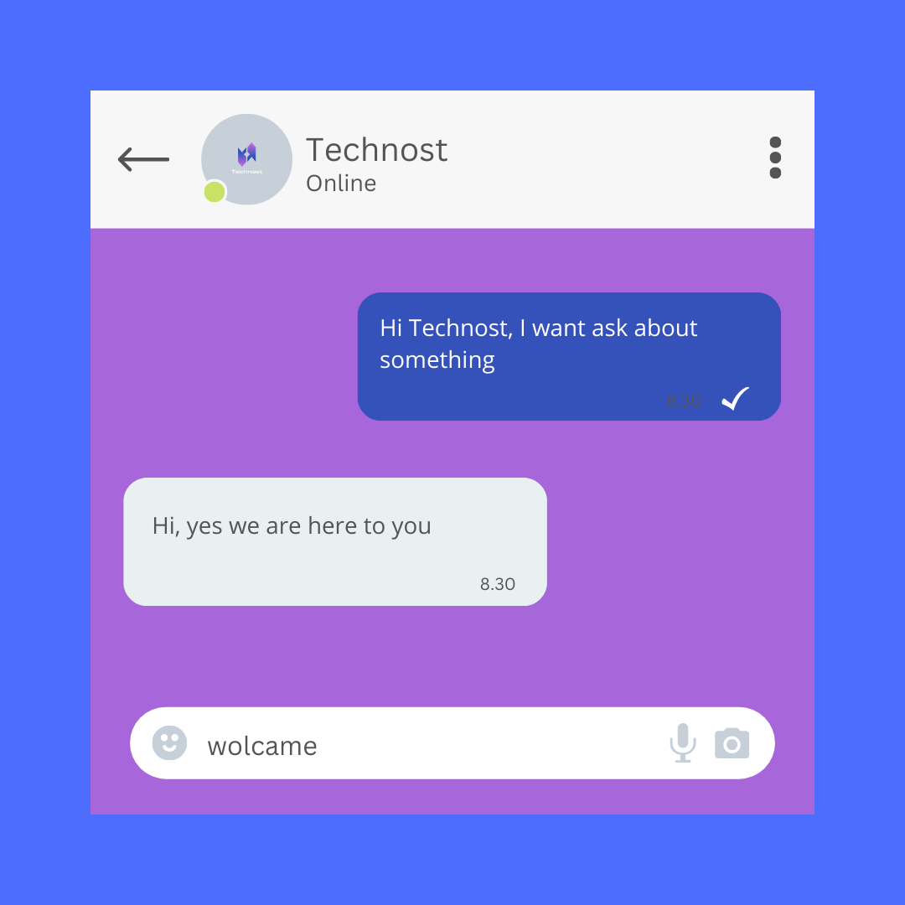

تمكين عملك بذكاء آلي لتقديم دعم عملاء فوري وفعال.
هو برنامج حاسوبي مصمم لمحاكاة المحادثات البشرية عبر النصوص أو الصوت، ويكون مدعومًا بالذكاء الاصطناعي ليفهم استفسارات العملاء ويقدم إجابات فورية ودقيقة. يعمل نظام الشات بوت كبديل أو مكمل لفريق خدمة العملاء البشري، مما يوفر دعمًا على مدار الساعة.
يوفر النظام ردودًا فورية على استفسارات العملاء في أي وقت، حتى خارج ساعات العمل الرسمية، مما يعزز رضا العملاء.
يمكن تدريب الشات بوت لفهم والرد بلغات متعددة، بما في ذلك اللغة العربية الفصحى واللهجات المحلية، لخدمة قاعدة جماهيرية أوسع.
يقدم إجابات متسقة ودقيقة، ويقلل من وقت انتظار العميل، مما يؤدي إلى تجربة أفضل وأكثر سلاسة.
يقلل من الحاجة إلى توظيف عدد كبير من موظفي خدمة العملاء، ويحرر الفريق البشري للتركيز على المشكلات الأكثر تعقيدًا.
يمكن دمجه بسهولة مع أنظمة إدارة علاقات العملاء (CRM) ومنصات المراسلة الشائعة (مثل فيسبوك ماسنجر، واتساب، أو موقع الويب الخاص بك).
يعتمد نظام الشات بوت الخاص بنا على تقنيات الذكاء الاصطناعي ومعالجة اللغة الطبيعية (NLP) لفهم سياق استفسارات العملاء، وليس مجرد الكلمات المفتاحية. يتم تدريبه على مجموعة واسعة من البيانات المتعلقة بعملك لضمان دقة الاستجابات. عند الحاجة، يمكنه تحويل المحادثة بسلاسة إلى موظف بشري.
تواصل معنا اليوم لمعرفة كيف يمكن لنظام الشات بوت الذكي أن يحول تجربة عملائك.
اطلب استشارة